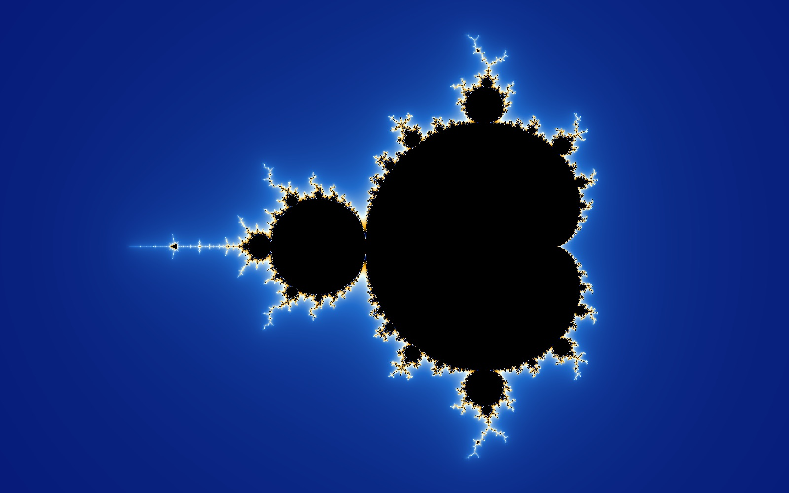
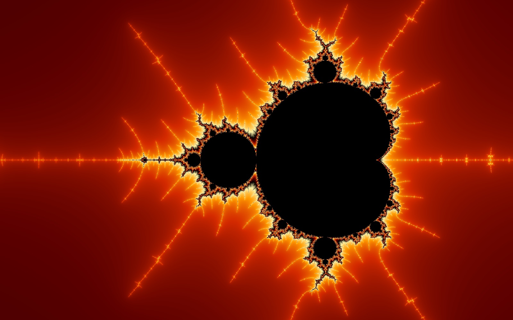
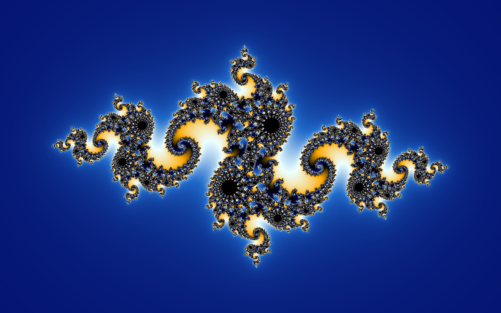
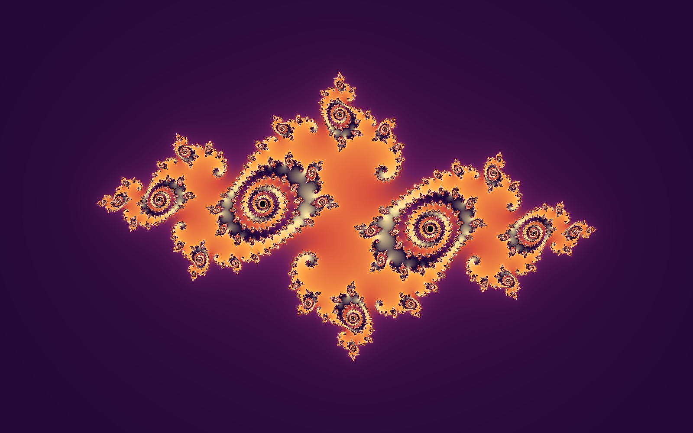

Introduction
Where do the pictures in ALFinity come from? From one very simple rule, repeated over and over. This page explains the idea in plain words. The boxes marked “The math (optional)” are for the curious – you can skip them.
What is a fractal?
A fractal is a shape whose small parts look similar to the whole. Zoom in, and you find new detail; zoom in again, and there is still more – without end.
Nature is full of shapes like this: a coastline looks just as ragged on a map as from a cliff, each branch of a fern looks like a small fern, and a head of Romanesco broccoli is made of smaller heads, which are made of even smaller ones.
The fractals in ALFinity are made by a computer. Each one comes from a single short rule. The surprise is how much beauty such a simple rule can hold.
The Mandelbrot set
Think of the picture as a map. Every point on it stands for a number, called c. For each point, the computer plays a little game:
- Start with 0.
- Multiply the result by itself, then add c.
- Repeat step 2 again and again.
For some points the result always stays small, no matter how often you repeat. These points belong to the Mandelbrot set and are painted black. For all other points the result sooner or later grows bigger and bigger – it “runs away”. These points get a color.

Zooming in
The edge of the Mandelbrot set never gets smooth, however far you zoom in. And everywhere along it, tiny copies of the whole set appear, each with its own decorations – and those copies have even smaller copies around them.

Julia sets
Julia sets use exactly the same rule, but turn the game around: now the number c is chosen once and stays the same for the whole picture. Instead, every point of the picture is the starting value. Again, points whose results stay small are black, and the others get a color.
Every c gives a different shape – there are infinitely many Julia sets. In ALFinity you choose c in the Shape panel, either from named shapes or by tapping a point on a small map of the Mandelbrot set.
And here is the link between the two: if c lies inside the Mandelbrot set, its Julia set is one connected shape. If c lies outside, the Julia set falls apart into infinitely many tiny pieces, like dust. So the Mandelbrot set is also a map of all Julia sets.


What do the colors mean?
The color of a point shows how quickly it runs away: the computer counts how many repeats it takes until the result is clearly too big. Points that run away after a few steps get one color, points that take longer get the next color of the palette, and so on. Black means: it never ran away, even after many hundreds of repeats.
With smooth colors ALFinity also uses how far a point got past the limit, so the colors blend without visible steps. With smooth colors off you see the steps as bands.
Which colors are used is pure decoration: the palette, color shift and density are artistic choices. The shape itself always stays the same – so play with them freely.
Read more
- Fractal – Wikipedia
- Mandelbrot set – Wikipedia
- Julia set – Wikipedia